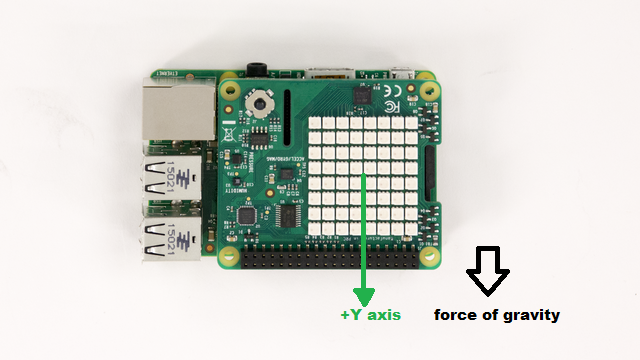
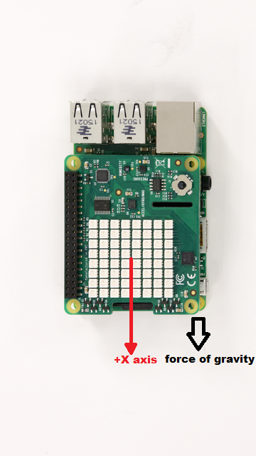
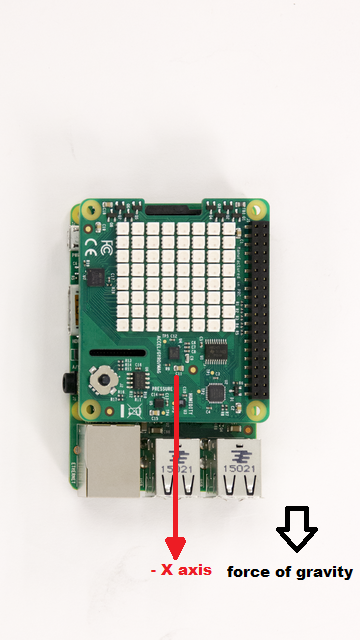

Auto-rotate LED Matrix Display
This example shows you how to use MATLAB® to read the accelerometer on the Raspberry Pi Sense HAT and control the rotation of the image displayed on the LED matrix.
Contents
Introduction
The Raspberry Pi Sense HAT is an add-on board for Raspberry Pi hardware. It has an 8X8 RGB LED Matrix, a five-position joystick and includes the following sensors:
- Humidity sensor
- Pressure sensor
- IMU sensor (Accelerometer, Gyroscope, and Magnetometer).
In this example, you will develop an algorithm to auto-rotate an image displayed on the LED matrix according to the orientation of the Sense HAT.
Prerequisites
- We recommend completing Working with Raspberry Pi Sense HAT example.
Required Hardware
To run this example you will need the following hardware:
- Raspberry Pi hardware
- Raspberry Pi Sense HAT
Create a Sense HAT object
Create a Sense HAT object by executing the following command on the MATLAB prompt.
clear rpi clear mysensehat rpi = raspi(); mysensehat = sensehat(rpi);
mysensehat is a handle to a sensehat object.
Let us display an image on the LED matrix of Sense HAT.
img = imread('senseHAT_demo.png');
displayImage(mysensehat,img);
Setting the Orientation of an Image
Rotate the image by specifying the value of the 'Orientation'. Default value of Orientation is 0. To change Orientation to 90, execute the following on the MATLAB command prompt:
displayImage(mysensehat,img,90);
Repeat the exercise by changing the orientation to 180 and 270 degrees.
Read Accelerometer
When Raspberry Pi is held vertically, the force of gravity acts only on one axis of the accelerometer. Depending on the axis along which the force of gravity is acting, we can determine the orientation of the image. Now, let us read the value of the accelerometer when the board is held is held pointing upwards (HDMI port of the Raspberry Pi board pointing downwards).
accel = readAcceleration(mysensehat)
Repeat the exercise by holding the board in various orientations. Observe the values of acceleration along the principal axis. Depending on how the board is held, we have the following observations.
- If the board is rotated to point upwards, then the force of gravity acts along negative Y axis.

- If the board is rotated to point downwards, then the force of gravity acts along positive Y axis.

- If the board is rotated left, then the force of gravity acts along positive X axis.

- If the board is rotated right, then the force of gravity acts along negative X axis.

Based on these observations, we can heuristically detect the orientation of the Sense HAT board by comparing the acceleration value along X and Y axis to a threshold of 0.75g. If the acceleration along one of these axis exceed 0.75g, we will deem that the board is roughly oriented along that axis.
Auto-rotating an Image
We will use the following algorithm to rotate the displayed image according to the board orientation:
- If the board is rotated to point upwards, then force of gravity acts along negative y axis. In this case Orientation = 0.
- If the board is rotated to point downwards, then force of gravity acts along positive y axis. In this case Orientation = 180.
- If the board is rotated to left, then force of gravity acts along positive X axis. In this case Orientation = 90.
- If the board is rotated to right, then force of gravity acts along negative X axis. In this case Orientation = 270.
orientation = 0; if accel(1) > 0.75 orientation = 90; elseif accel(1) < -0.75 orientation = 270; elseif accel(2) > 0.75 orientation = 180; elseif accel(2) < -0.75 orientation = 0; end displayImage(mysensehat,img,orientation);
Run Auto-rotation algorithm in a loop
We can create a MATLAB function, autorotate.m, from the MATLAB code we developed in the previous sections of this example. To view the MATLAB function in the editor:
edit('autorotate.m');
The function autorotate() takes a handle to the Sense HAT object and an image. The function will rotate the displayed image based on the algorithm described above. We will call this function in a loop. To increase the duration for which the function runs, increase upper limit of the 'for' loop in the MATLAB code snippet below. While the MATLAB code is running, rotate the board to see the auto-rotation algorithm in action.
for i = 1:1000 autorotate(mysensehat,img); end
Summary
This example introduced an application example where the LED matrix display is rotated automatically to track the orientation of the Raspberry Pi board.